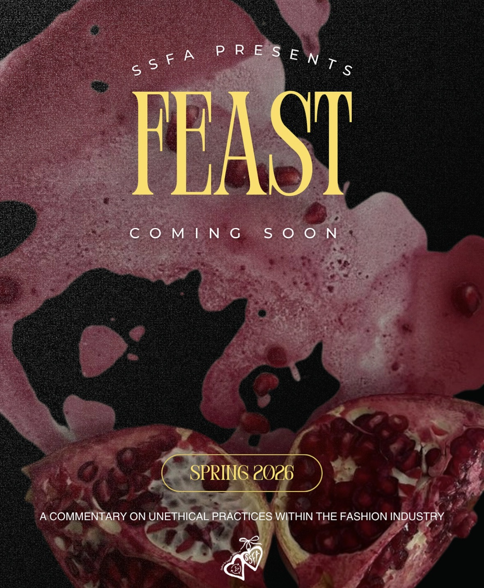
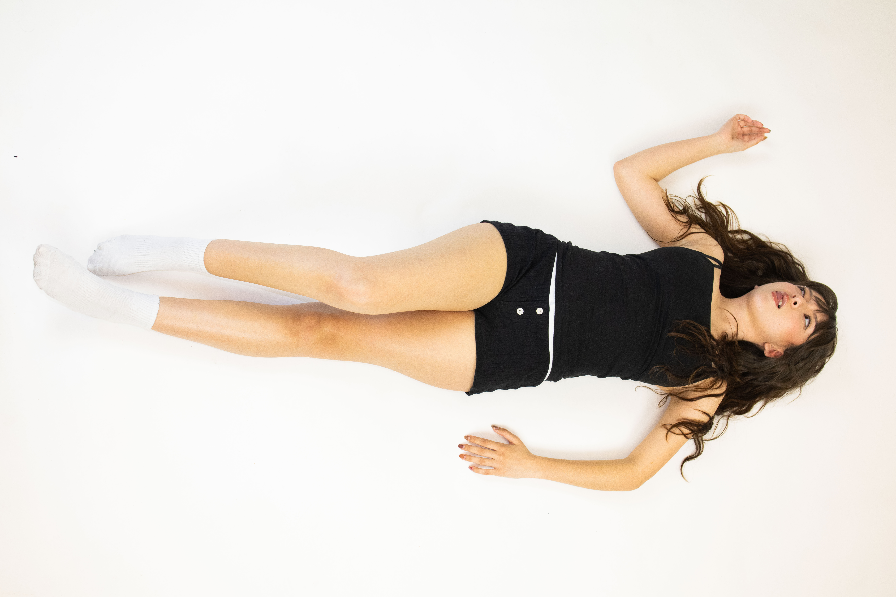
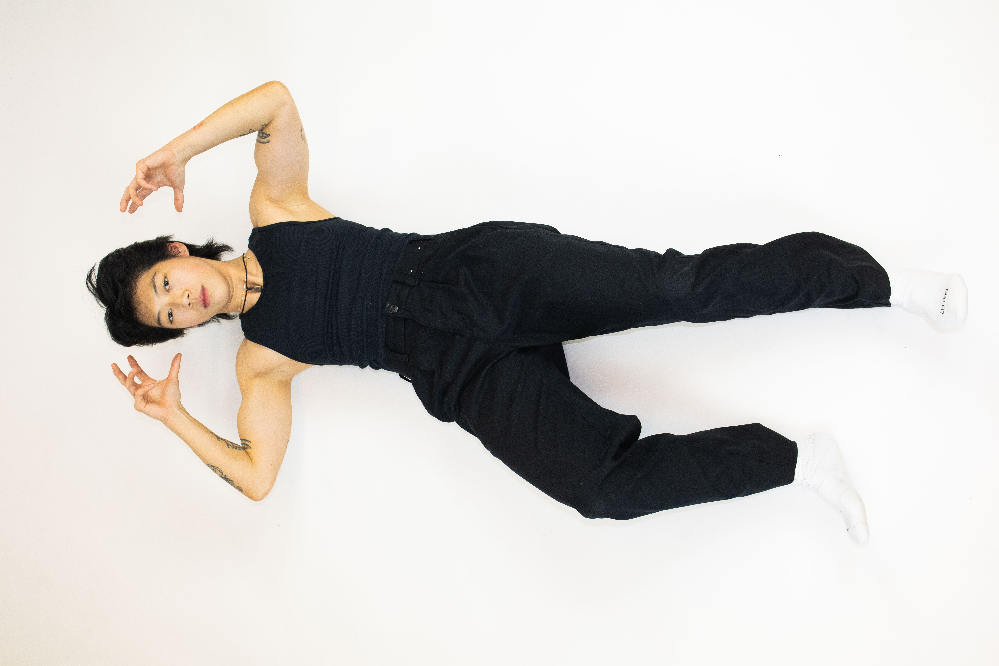
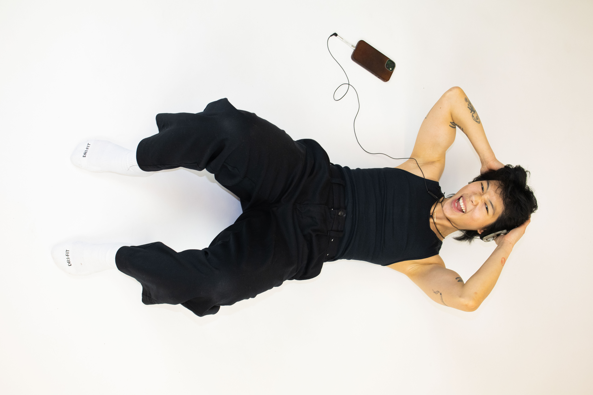
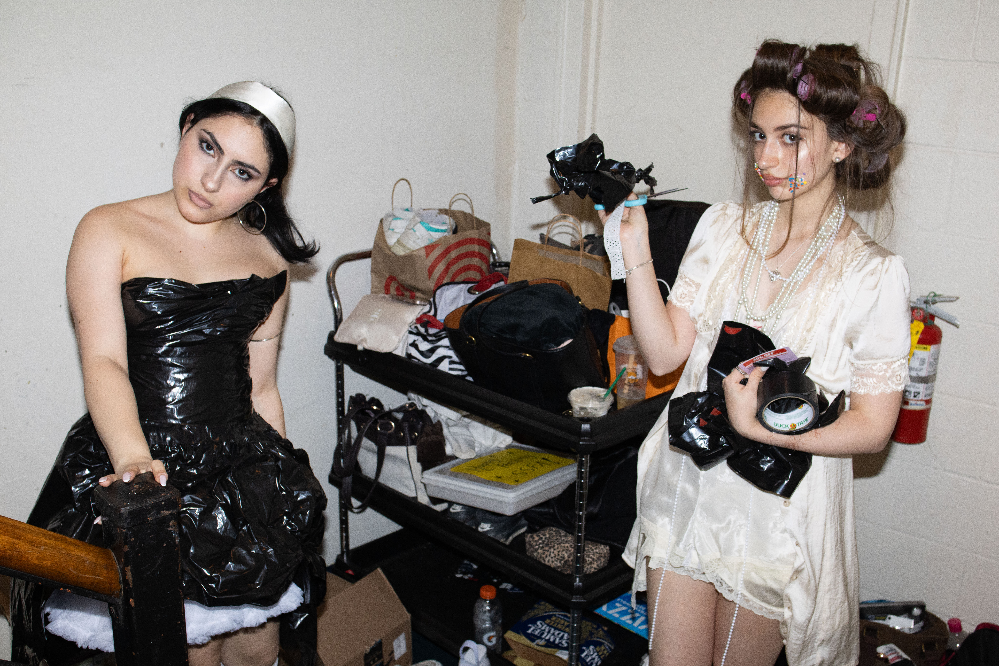
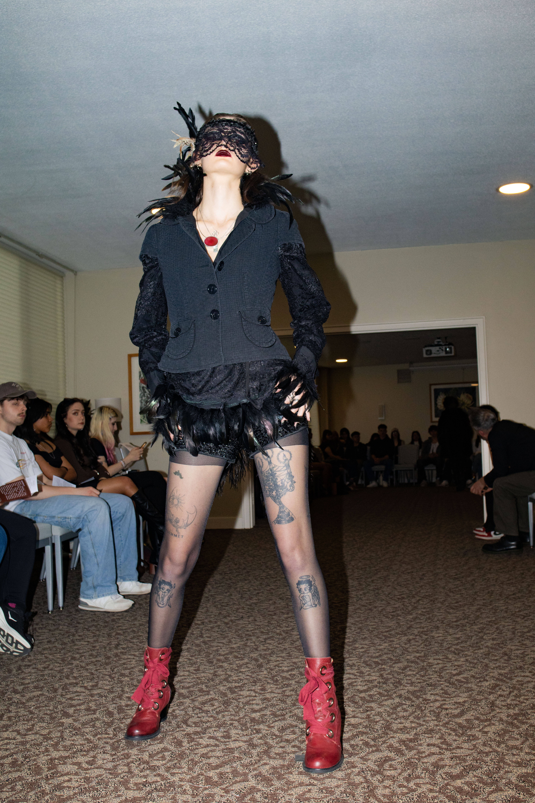
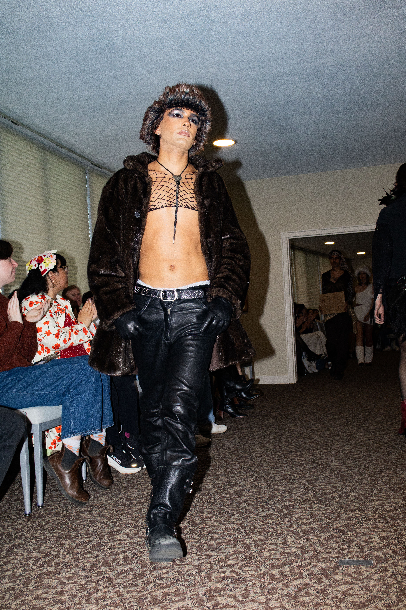
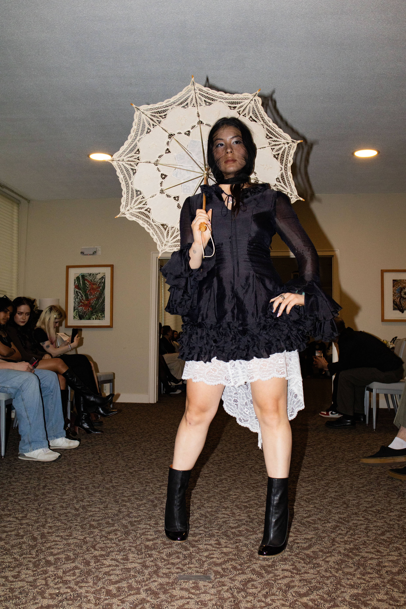
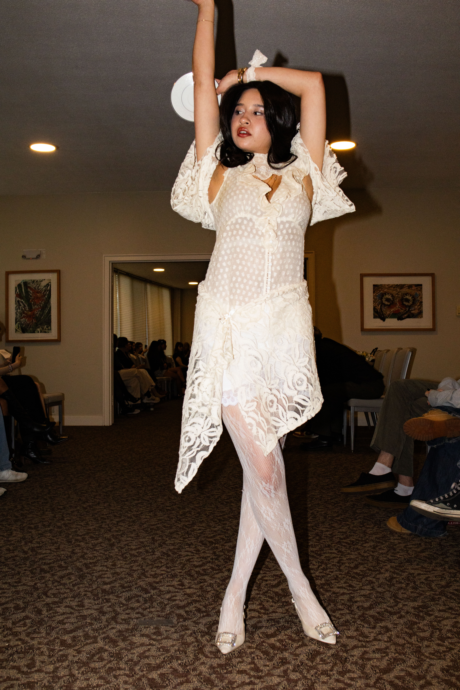
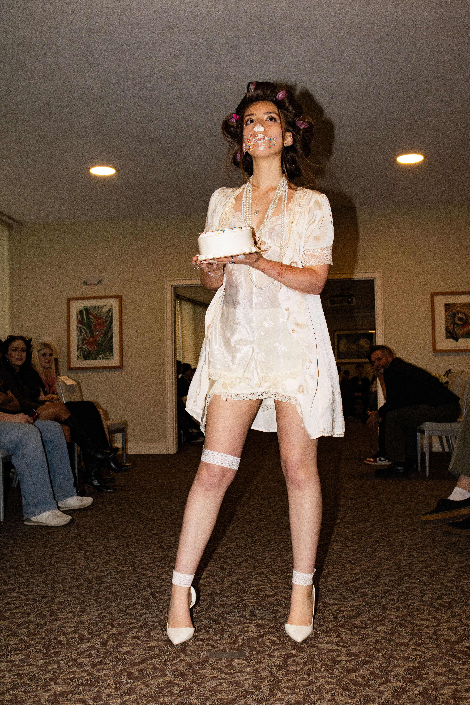

Course 01

SSFA · Campaign & Creative Direction · 2026
A fashion show built around fashion's appetite for more — from fast fashion and animal products to luxury and excess.
01 · The Idea
FEAST was SSFA's debut fashion show, designed around the idea that the fashion industry is constantly consuming — resources, labor, animals, trends, and attention.
Rather than treating sustainability as a traditional educational campaign, we built an entire world around a formal feast. The audience was invited to sit at the table, move through four courses, and confront different forms of excess along the way.
The result was a campaign where the concept wasn't just something we communicated. It shaped the visual identity, copy, content structure, event design, and audience experience.
02 · Campaign Strategy
The campaign was structured as a narrative rather than a collection of promotional posts. Each phase answered a different question and gradually revealed the world of FEAST.
Introduce the event as an exclusive invitation.
Establish the visual world without revealing everything.
Unveil the four concepts one at a time.
Shift from storytelling toward ticket purchase.
Build urgency and bring the audience to the table.



03 · The Menu


04 · The Experience
The campaign language extended beyond Instagram into the physical materials guests encountered at the event.


The campaign extended beyond static imagery through a series of short-form videos that built anticipation, introduced the show's concept, and brought the visual world of FEAST to life.
06 · Production
I planned and coordinated three production days to create enough imagery for the campaign's posters, course reveals, social content, video, and event materials. Each shoot had a specific purpose while still contributing to the same visual world.





07 · Copy & Content
I developed a consistent vocabulary around the FEAST concept, then adapted the same core message depending on where and how the audience encountered it.
Spoken language introduced each course and connected the clothing to the larger argument of the show.
The printed menu and program gave guests more context around each course and turned the concept into a physical artifact.
Social copy was shorter, more immediate, and designed to create curiosity, communicate the campaign narrative, and eventually drive ticket purchases.
08 · Leadership
As Head Marketing Manager, I wasn't just developing the creative direction. I was responsible for turning that direction into a realistic production schedule and coordinating the people needed to execute it.
Midway through the semester, the FEAST calendar collided with other SSFA events and midterms. The campaign suddenly required more than a post a day in several places, despite an earlier effort to avoid overloading the team.
During an increasingly chaotic e-board meeting, I stepped in, walked through the full content calendar post by post, sequenced the campaign, and assigned work according to each person's availability and workload. The co-presidents supported the plan, and we left the meeting with a clear path forward.
Built the campaign structure, content calendar, and narrative progression.
Developed the visual system, shoot concepts, copy framework, and campaign world.
Coordinated a five-person marketing team across production, social content, and event promotion.
09 · Results
10 · The Feast
On April 26, the language and visual system built online became a physical experience — from the menu and signage to the dinner-party styling and four-course runway structure.







FEAST · April 25, 2026
A campaign built from strategy, creative direction, production, storytelling, and a lot of moving parts — all designed to make one idea impossible to miss.